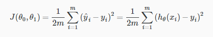
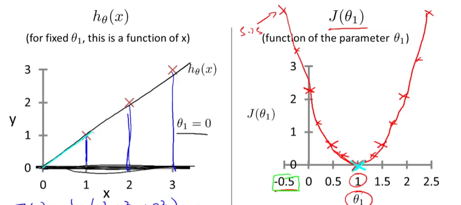
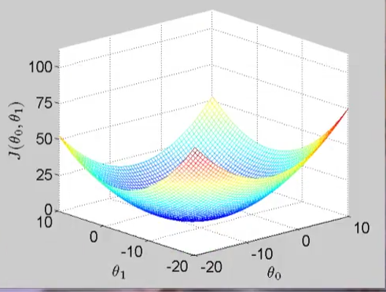
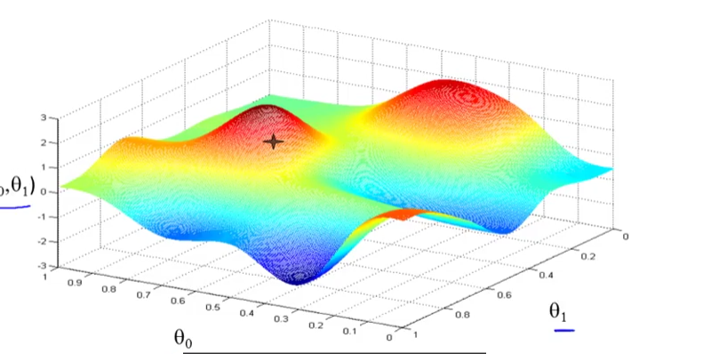
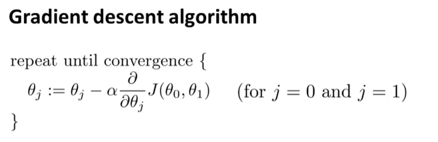
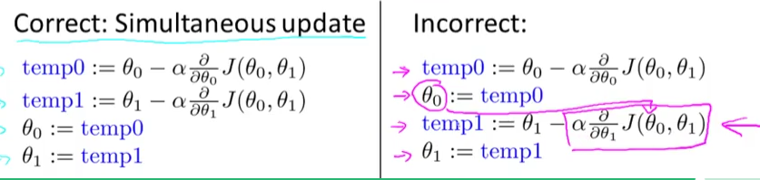

Introduction
Machine Learning
The field of study that gives computers the ability to learn without being explicitly programmed.
A computer program is said to learn from experience E with respect to some class of tasks T and performance measure P, if its performance at tasks in T, as measured by P, improves with experience E.
Supervised Learning
- Unsupervised Learning
- Reinforcement learning
- Recommender systems
根据训练数据是否有标记信息，可大致把学习任务分成两类，监督学习和无监督学习。前者主要包括分类和回归。后者主要有聚类。
Supervised Learning
- classification
- regression
Unsupervised Learning
- clustering 聚类
需要注意的是，机器学习的目标是学得的模型可以很好的适用“新样本”，而不仅是在训练样本上工作良好，即使对于聚类这样的无监督学习任务，也希望他能适用于新样本，称为 泛化 generaliazation
Model and Cost Function
Model Representation

Cost Function
measure the accuracy of our hypothesis function by using a cost function

This function is otherwise called the “Squared error function”, or “Mean squared error”.
1\2 后面梯度下降的时候会消掉
1\m 是求和的平均
理解 Cost Function
先把 参数 Θ0 看作零 使参数只有一个的时候

左面是假设函数，在确定Θ1值的情况下 可以画出一条直线 这时候就可以计算出相应的Θ值在右侧cost函数里的对应值
明显可以看出 Θ=1 代价函数值为零 完全拟合
那么 加一个参数 Θ0 的话 相应的cost function的函数图像就会是

Parameter Learning
Gradient Descent

step1 确定初始值 Θ0 Θ1
step2 环顾四周 确定一个方向可以下降最快 往下走一步
重复step2 直到走到局部最低点
特点 每一次迈的步长不一样 那么下一步的方向可能就不一样
出发点不一样 最后的局部最低点可能也不一样

ɑ 是 learning rate 控制下山的步长 后面是一个求偏导 是方向
ɑ 太小 下降 很慢
ɑ 太大 可能错过最低点 导致无法收敛 甚至发散
以为求导数 越接近最低点 倒数越接近零 所以ɑ*后面导数值就越小 以至于步长越小 最后收敛
但是要同时更新 Θ0 和 Θ1
怎么办呢？
